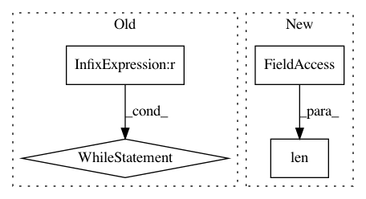

4396573e860d553825702006aa335989356b45c8,inaSpeechSegmenter/segmenter.py,,featGenerator,#,318
Before Change
def featGenerator(flist, tmpdir=None, ffmpeg="ffmpeg"):
thread = ThreadReturning(target = media2feats, args=[flist.pop(0), tmpdir, None, None, ffmpeg])
thread.start()
while len(flist) > 0:
ret = thread.join()
thread = ThreadReturning(target = media2feats, args=[flist.pop(0), tmpdir, None, None, ffmpeg])
thread.start()
yield ret
ret = thread.join()
yield ret
After Change
// print("new list", ilist)
//ilist = ilist[len(msg):]
//olist = olist[len(msg):]
if len(ilist) == 0:
break
thread = ThreadReturning(target = medialist2feats, args=[ilist, olist, tmpdir, ffmpeg, skipifexist, nbtry, trydelay])
thread.start()
In pattern: SUPERPATTERN
Frequency: 3
Non-data size: 4
Instances
Project Name: ina-foss/inaSpeechSegmenter
Commit Name: 4396573e860d553825702006aa335989356b45c8
Time: 2020-05-10
Author: ddoukhan@ina.fr
File Name: inaSpeechSegmenter/segmenter.py
Class Name:
Method Name: featGenerator
Project Name: scikit-image/scikit-image
Commit Name: 141801bb8e119346c6f53c45e469b5a3e981299c
Time: 2019-12-19
Author: xwu@enthought.com
File Name: skimage/transform/hough_transform.py
Class Name:
Method Name: label_distant_points
Project Name: miso-belica/sumy
Commit Name: c16886fefa4cca5f7b45e52ff2fcb1b89876c70a
Time: 2013-03-05
Author: miso.belica@gmail.com
File Name: sumy/algorithms/luhn.py
Class Name: LuhnMethod
Method Name: __remove_trailing_zeros